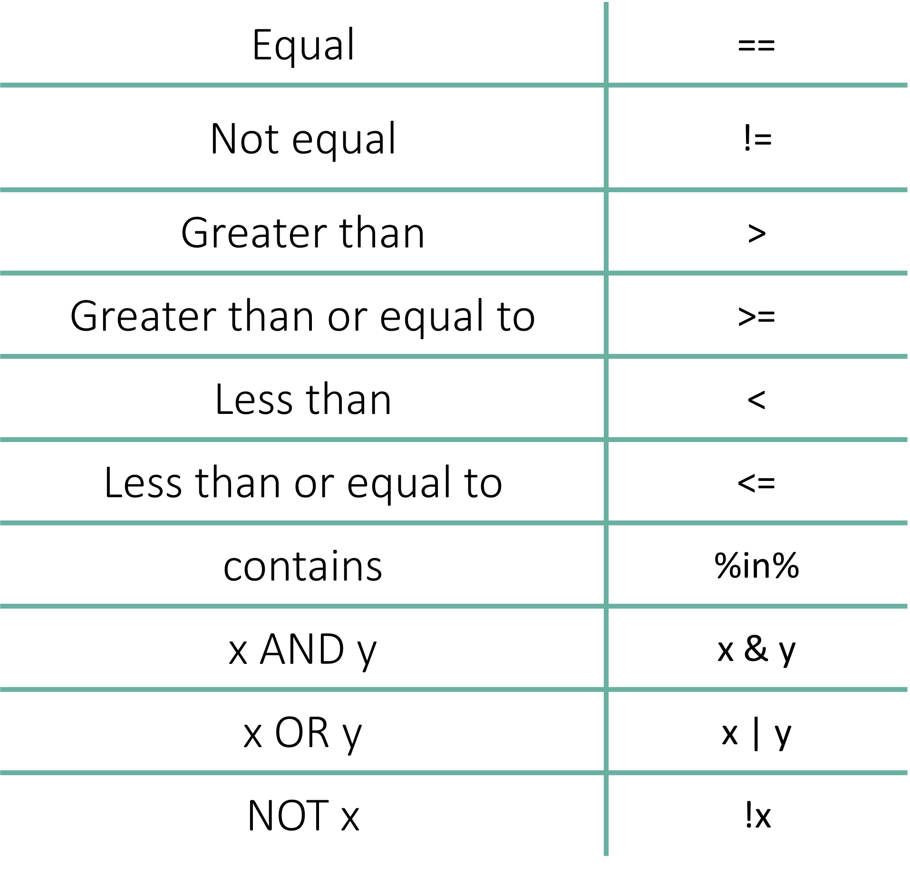
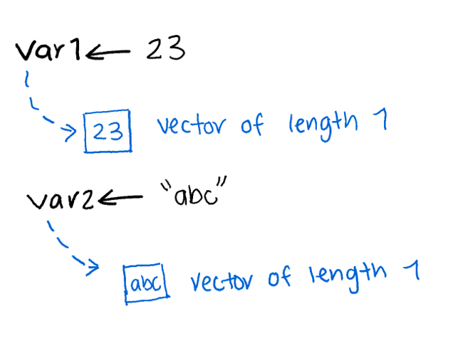
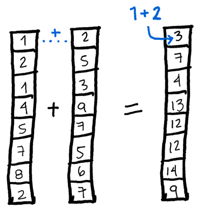
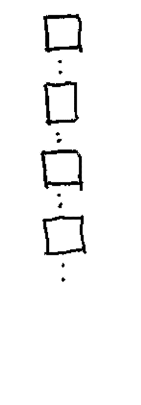
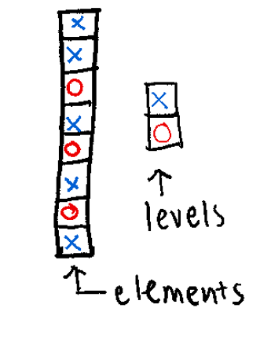
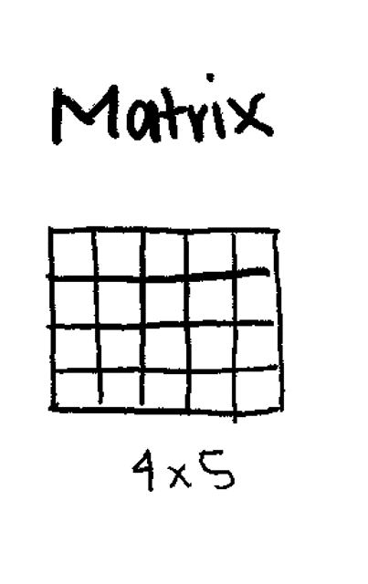
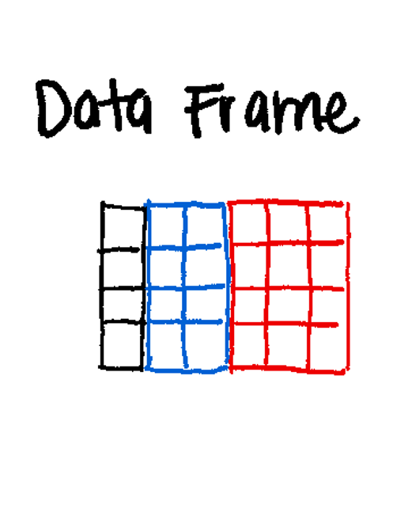

3 Data types and data structures
Learning objectives
- Understand the differences between classes, objects and data types in R
- Create objects of different types
- Subset and index objects
- Learn and use vectorized operations
3.2 Atomic Classes
Atomic classes are the fundamental data type found in R. All subsequent data structures are used to store entries of different atomic classes.
3.2.1 Numeric
They store numbers as double, and it is stored with decimals. The term double refers to the number of bytes required to store it. Each double is accurate up to 16 significant digits.
3.2.2 Integer
They store numbers that can be written without a decimal component. Adding an L after an integer tells R to store it as an integer class instead of a numeric
3.2.3 Logical
They store the outputs of logical statements - TRUE or FALSE. Can be converted to integer where TRUE = 1 and FALSE = 0.
3.4 Logical operators

## [1] FALSE## [1] FALSE## [1] TRUE## [1] FALSEStrings are compared character by character until they are not equal or there are no more characters left to compare.
## [1] TRUEWe can test if a variable is contained in another object
## [1] TRUE## [1] FALSE3.5 Exercise
- Write a piece of code that stores a number in a variable and then check if it is greater than 5. Try to use comments!
- Bonus: Is there a way to store the result after checking the number?
3.7 Vectors
Key points:
- Can only contain objects of the same class
- Most basic type of R object
- Variables are vectors

3.7.1 Numeric
Creating a numeric vector using c()
## [1] 0.3 0.1Using the vector() function
## [1] 0 0 0 0 0 0 0 0 0 0Using the numeric() function
## [1] 0 0 0 0 0 0 0 0 0 0Creating a numeric vector with a sequence of numbers
## [1] 1 3 5 7 9## [1] 2 2 2 2 2 2 2 2 2 2Check length of vector with length()
## [1] 2 2 2 2 2 2 2 2 2 2## [1] 10## [1] 2 2 2 2 2## [1] 5## [1] FALSE3.7.2 Integer
Creating an integer vector using c()
## [1] 1 2 3 4 5Creating an integer vector of a sequences of numbers
## [1] 1 2 3 4 5 6 7 8 9 103.7.3 Logical
Creating a logical vector with c()
## [1] TRUE FALSE TRUE FALSECreating a logical vector with vector()
## [1] FALSE FALSE FALSE FALSE FALSECreating a logical vector using logical()
## [1] FALSE FALSE FALSE FALSE FALSE FALSE FALSE FALSE FALSE FALSE3.7.4 Character
## [1] "a" "b" "c"## [1] "" "" "" "" "" "" "" "" "" ""## [1] "" "" ""Some useful functions to modify strings
## [1] "a" "b" "c" "d" "e" "f" "g" "h" "i" "j" "k" "l" "m" "n" "o" "p" "q" "r" "s" "t" "u" "v" "w" "x" "y" "z"## [1] "A" "B" "C" "D" "E" "F" "G" "H" "I" "J" "K" "L" "M" "N" "O" "P" "Q" "R" "S" "T" "U" "V" "W" "X" "Y" "Z"## [1] "a_1" "b_2" "c_3" "d_4" "e_5" "f_6" "g_7" "h_8" "i_9" "j_10" "k_11" "l_12" "m_13" "n_14" "o_15" "p_16" "q_17" "r_18" "s_19" "t_20"
## [21] "u_21" "v_22" "w_23" "x_24" "y_25" "z_26"3.7.5 Vector attributes
The elements of a vector can have names
## one two three four five
## 1 2 3 4 5## F1 F2 F3 F4
## FALSE FALSE FALSE FALSE3.7.6 Built-in functions
To inspect the contents of a vector
## [1] TRUE## F1 F2 F3 F4
## FALSE FALSE FALSE FALSE## [1] FALSE## [1] FALSE## [1] TRUE## [1] FALSETo know what kind of vector you are working with
## [1] "logical"## [1] "logical"## Named logi [1:4] FALSE FALSE FALSE FALSE
## - attr(*, "names")= chr [1:4] "F1" "F2" "F3" "F4"To know more about the data contained in the vector
Mathematical operations
## [1] 0## [1] 0## [1] 0## [1] 5.5## [1] 5.5## [1] 3.02765## [1] 0.0000000 0.6931472 1.0986123 1.3862944 1.6094379 1.7917595 1.9459101 2.0794415 2.1972246 2.3025851## [1] 2.718282 7.389056 20.085537 54.598150 148.413159 403.428793 1096.633158 2980.957987 8103.083928 22026.465795Other operations
## [1] 10## x
## 1 2 3 4 5 6 7 8 9 10
## 1 1 1 1 1 1 1 1 1 1## Min. 1st Qu. Median Mean 3rd Qu. Max.
## 1.00 3.25 5.50 5.50 7.75 10.003.7.7 Vector Operations

## [1] 2 4 6 8 10 12 14 16 18 20## [1] 12 14 16 18 20 22 24 26 28 30## [1] 11 24 39 56 75 96 119 144 171 200## [1] 1.000000e+00 4.096000e+03 1.594323e+06 2.684355e+08 3.051758e+10 2.821110e+12 2.326305e+14 1.801440e+16 1.350852e+18 1.000000e+203.7.8 Recycling
If one of the vectors is smaller than the other, operations are still possible. R will replicate the smaller vector to enable the operation to occur. IMPORTANT: if the larger vector is NOT a multiple of the smaller vector, the replication will still occur but will end at the length of the larger vector.
## Warning in x + y: longer object length is not a multiple of shorter object length## [1] 2 4 6 5 7 9 8 10 12 113.7.9 Indexing and subsetting
For this example, lets create a vector of random numbers from 1 to 100 of size 15.
## [1] 86 77 14 98 94 49 2 5 61 7 10 29 38 21 81Using the index/position
## [1] 86## [1] 38Using a vector of indices
## [1] 86 77 14 98 94 49 2 5 61 7 10 29## [1] 86 94 49 5 61 38## a c d
## 86 14 98Using a logical vector
## a b c d e f g h i j k l m n o
## FALSE FALSE FALSE FALSE FALSE FALSE TRUE TRUE FALSE TRUE FALSE FALSE FALSE FALSE FALSE## d
## 98## a b c d e f g h i j k l m n o
## FALSE FALSE FALSE FALSE FALSE FALSE TRUE TRUE FALSE TRUE FALSE FALSE FALSE FALSE FALSE## g h j k
## 2 5 7 10Skipping elements using indices
## b c d f g h i j k l m n o
## 77 14 98 49 2 5 61 7 10 29 38 21 81Skipping elements using names
## b c d e f g h i j
## 2 3 4 5 6 7 8 9 103.8 Lists
Key points:
- Can contain objects of multiple classes
- Extremely powerful when combined with some R built-in functions

Creating lists with different data types
## [[1]]
## [1] 1 2 3 4 5 6 7 8 9 10
##
## [[2]]
## [[2]][[1]]
## [1] "hello"
##
## [[2]][[2]]
## [1] "hi"
##
##
## [[3]]
## [1] TRUEAssigning names as we create the list
## $title
## [1] "Numbers"
##
## $numbers
## [1] 1 2 3 4 5 6 7 8 9 10
##
## $logic
## [1] TRUE## [1] "title" "numbers" "logic"## [1] 1 2 3 4 5 6 7 8 9 103.8.1 Indexing and subsetting
Using [[]] instead of []
## [1] "Numbers"Using $ for named lists
## [1] TRUE3.8.2 Built-in functions
## $r1
## [1] 68 95 47 30 77 18 42 73 100 19
##
## $r2
## [1] 44 66 85 13 92 90 36 38 79 22
##
## $r3
## [1] 99 98 81 73 64 36 14 61 52 89Performing operations on all elements of the list using lapply
## $r1
## [1] 569
##
## $r2
## [1] 565
##
## $r3
## [1] 667## $r1
## [1] 323761
##
## $r2
## [1] 319225
##
## $r3
## [1] 4448893.9 Factors
Key points:
- Useful when for categorical data
- Can have implicit order, if needed
- Each element has a label or level
- They are important in statistical modelling and plotting with ggplot
- Some operations behave differently on factors

Creating factors with factor
cols<-factor(x = c(rep("red",4),rep("blue",5),rep("green",2)),
levels = c("red","blue","green"))
cols## [1] red red red red blue blue blue blue blue green green
## Levels: red blue green## [1] "case" "control" "control" "case"## [1] case control control case
## Levels: control case## Factor w/ 2 levels "control","case": 2 1 1 23.10 Exercise
See what happens when you convert a factor to a numeric in the code chunk below. What do you get?
3.11 Matrices

Creating a matrix full of zeros with matrix()
## [,1] [,2] [,3] [,4] [,5] [,6]
## [1,] 0 0 0 0 0 0
## [2,] 0 0 0 0 0 0
## [3,] 0 0 0 0 0 0## [1] "matrix" "array"## [1] "double"Creating a matrix from a vector of numbers
## [,1] [,2]
## [1,] 1 1
## [2,] 2 2
## [3,] 3 3
## [4,] 4 4
## [5,] 5 53.12 Data frames
Key points:
- Columns in data frames are vectors
- Each column can be of a different data type
- A data frame is essentially a list of vectors

Creating a data frame using data.frame()
## numbers low_letters logical_values
## 1 1 a TRUE
## 2 2 b TRUE
## 3 3 c TRUE
## 4 4 d TRUE
## 5 5 e TRUE
## 6 6 f FALSE
## 7 7 g FALSE
## 8 8 h FALSE
## 9 9 i FALSE
## 10 10 j FALSE## [1] "data.frame"## [1] "list"## 'data.frame': 10 obs. of 3 variables:
## $ numbers : int 1 2 3 4 5 6 7 8 9 10
## $ low_letters : chr "a" "b" "c" "d" ...
## $ logical_values: logi TRUE TRUE TRUE TRUE TRUE FALSE ...Re-naming columns
## numbers lowercase logical_values
## 1 1 a TRUE
## 2 2 b TRUE
## 3 3 c TRUE
## 4 4 d TRUE
## 5 5 e TRUE
## 6 6 f FALSE3.13 Coercion
Converting between data types with as. functions
## [[1]]
## [1] 1
##
## [[2]]
## [1] 2
##
## [[3]]
## [1] 3
##
## [[4]]
## [1] 4
##
## [[5]]
## [1] 5
##
## [[6]]
## [1] 6
##
## [[7]]
## [1] 7
##
## [[8]]
## [1] 8
##
## [[9]]
## [1] 9
##
## [[10]]
## [1] 10## $numbers
## [1] 1 2 3 4 5 6 7 8 9 10
##
## $lowercase
## [1] "a" "b" "c" "d" "e" "f" "g" "h" "i" "j"## [1] "list"## numbers lowercase
## 1 1 a
## 2 2 b
## 3 3 c
## 4 4 d
## 5 5 e
## 6 6 f
## 7 7 g
## 8 8 h
## 9 9 i
## 10 10 j## [1] "list"3.14 Hands on: Data types
- Make a matrix with the numbers 1:50, with 5 columns and 10 rows. Did the matrix function fill your matrix by column, or by row, as its default behavior?
- Create a list of length two containing a character vector for each of the data sections: (1) Data types and (2) Data structures. Populate each character vector with the names of the data types and data structures, respectively.
- There are several subtly different ways to call variables, observations and elements from data frames. Try them all and discuss with your team what they return. (Hint, use the function
typeof())
- Take the list you created in 3 and coerce it into a data frame. Then change the names of the columns to “dataTypes” and “dataStructures”.